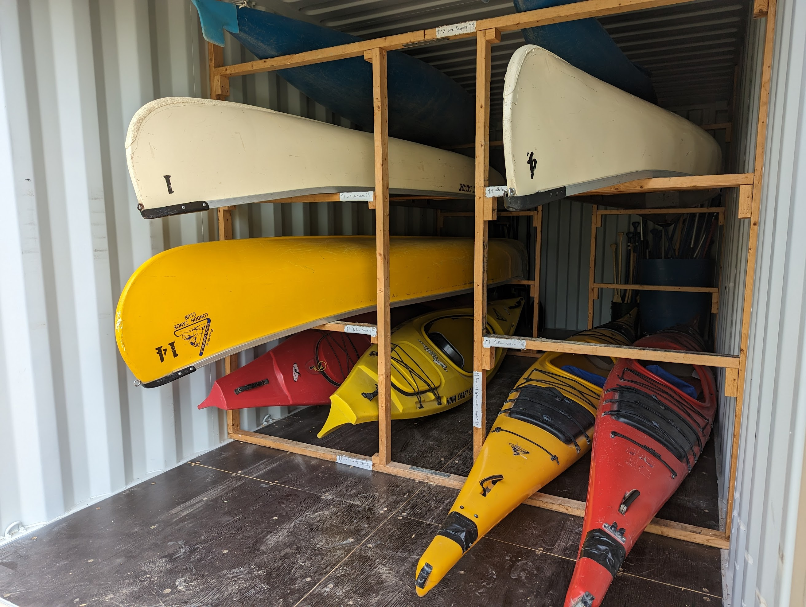

---
# Feel free to add content and custom Front Matter to this file.
# To modify the layout, see https://jekyllrb.com/docs/themes/#overriding-theme-defaults

layout: index
title: Home
---
<div id="fb-root"></div>
<script async defer crossorigin="anonymous" src="https://connect.facebook.net/en_US/sdk.js#xfbml=1&version=v17.0" nonce="C4TK32BY"></script>



<h2>Updates:</h2>

<!--
<a class="twitter-timeline" data-tweet-limit="3" href="https://twitter.com/{{ site.twitter_username }}">Tweets by
    {{ site.twitter_username }}</a> <script async src="https://platform.twitter.com/widgets.js" charset="utf-8"></script>
-->

<!-- https://twitter.com/LondonCanoeClub?ref_src=twsrc%5Etfw -->


<div class="fb-page" data-href="https://www.facebook.com/{{ site.facebook_username }}/" data-tabs="timeline" data-width="500" data-height="800" data-small-header="true" data-adapt-container-width="true" data-hide-cover="true" data-show-facepile="false">
    <blockquote cite="https://www.facebook.com/{{ site.facebook_username }}/" class="fb-xfbml-parse-ignore"><a href="https://www.facebook.com/{{ site.facebook_username }}/">London Canoe Club</a></blockquote></div>